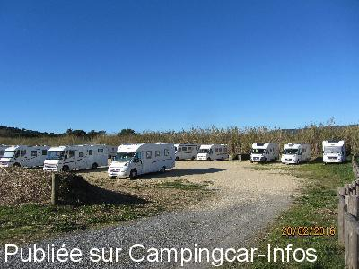
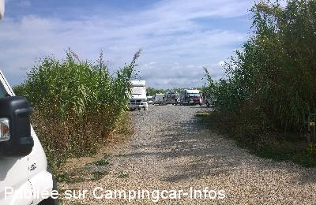
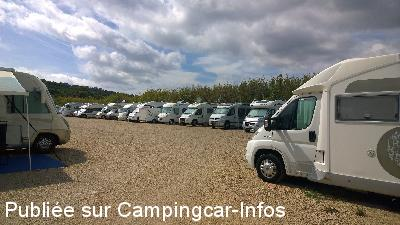
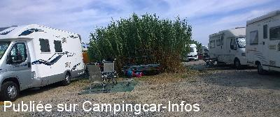
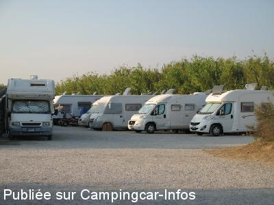
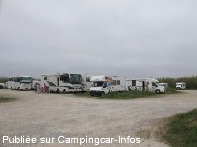

ASN = Aire de services avec stationnement nuit possible de :
RAMATUELLE
(N° 508)
Accès/adresse :
Route de Bonne Terrasse
83350 RAMATUELLE
83350 RAMATUELLE
Latitude : (Nord) 43.2112° Décimaux ou 43° 12′ 40′′
Longitude : (Est) 6.66223° Décimaux ou 6° 39′ 44′′
Tarif : 2016
Stationnement, services : 5,30 € à 8,50 €
Type de borne : Autre
Services :


Poubelles
Tous commerces
Le boulanger passe tous les matins entre 8 h 30 et 9 h
Autres informations :
Ouvert toute l'année
130 emplacements
Stationnement limité 48 h
Tél :+33(0)6 86 55 29 08 - + 33(0)4 98 12 64 00
http://www.ramatuelle-tourisme.com/ramatuelle-cote-mer-index-fr.htm

Le 08/03/2016 par rallye38

Le 27/09/2015 par cricrik57

Le 27/09/2015 par cricrik57

Le 27/09/2015 par cricrik57

Le 21/08/2015 par Ranocchio

Le 22/04/2015 par Myriam R
de
rallye38
le 10/03/2016 :
Très bien en inter saison mais il ne faut pas oublier les vélos , le scoot ou le quad car pas de commerces autour à part Ramatuelle
Très bien en inter saison mais il ne faut pas oublier les vélos , le scoot ou le quad car pas de commerces autour à part Ramatuelle
de
gégé83
le 19/10/2015 :
kaiser a raison.
normalement 48 h, aller une semaine je veux bien mais un mois... voire plus comme je l'ai vu. je ne suis pas d'accord.
ceci n'est que mon avis.où est la solidarité?
à force on va nous la supprimer cette aire.
kaiser a raison.
normalement 48 h, aller une semaine je veux bien mais un mois... voire plus comme je l'ai vu. je ne suis pas d'accord.
ceci n'est que mon avis.où est la solidarité?
à force on va nous la supprimer cette aire.
de
KAYSER
le 27/09/2015 :
Nous avons essayé d'y passé une nuit, mais au bout de 4 heures d'attente devant le portail d'entrée, le personnel nous a indiqué qu'il n'y avait pas de places disponibles. Surprenant car le délais maxi de stationnement sur cette aire est fixé par règlement de la mairie à 48 heures impératives. Ce qui est à priori non appliqué, car j'ai pu apercevoir et entendu des campings caristes qui étaient là depuis plusieurs semaines et qu'il suffisait de venir à 17h30, lorsque les barrières étaient ouvertes et de se mettre en double file jusqu'au lendemain matin, et ensuite partir à la chasse aux places dispos !!!!
Nous avons essayé d'y passé une nuit, mais au bout de 4 heures d'attente devant le portail d'entrée, le personnel nous a indiqué qu'il n'y avait pas de places disponibles. Surprenant car le délais maxi de stationnement sur cette aire est fixé par règlement de la mairie à 48 heures impératives. Ce qui est à priori non appliqué, car j'ai pu apercevoir et entendu des campings caristes qui étaient là depuis plusieurs semaines et qu'il suffisait de venir à 17h30, lorsque les barrières étaient ouvertes et de se mettre en double file jusqu'au lendemain matin, et ensuite partir à la chasse aux places dispos !!!!
de
Yves 34
le 11/05/2015 :
Bonjour, nous y avons passé une nuit avec un fourgon le 1 mai 2015. La plage était propre, il y avait effectivement quelques algues mais c'est habituel après de forts vents. Il y avait encore de la place mais cette aire est demandée. Nous avons étendu quelques musiques au loin pendant la nuit mais dans l'ensemble c'était très calme. Petit bémol, l'eau n'est disponible, tout comme les WC... que de 7h du matin environ à 17h. Après c'est terminé car il y aurait eu des abus ! L'accueil était très sympa. Nous recommandons.
Bonjour, nous y avons passé une nuit avec un fourgon le 1 mai 2015. La plage était propre, il y avait effectivement quelques algues mais c'est habituel après de forts vents. Il y avait encore de la place mais cette aire est demandée. Nous avons étendu quelques musiques au loin pendant la nuit mais dans l'ensemble c'était très calme. Petit bémol, l'eau n'est disponible, tout comme les WC... que de 7h du matin environ à 17h. Après c'est terminé car il y aurait eu des abus ! L'accueil était très sympa. Nous recommandons.
de
Myriam R
le 22/04/2015 :
Nous y avons passé 3 nuits en avril.Située près de la plage de Bonne Terrasse (sale: plastique de toute sorte: la municipalité nettoie-t'elle en haute saison?? et algues quasiment partout), un parking de gravier blanc avec vidanges et plein d'eau compris dans le prix: 8,20 euros. WC et douches eau froide à disposition. Elle a surtout l'avantage, en dehors du prix, d'être une bonne base pour visiter les villages aux alentours: Ramatuelle, Gassin, Saint Tropez, Port Grimaud... et à noter une belle randonnée par la forêt ou le long des criques pour accéder au phare Camarat. Le boulanger passe tous les matins sur l'aire.
Nous y avons passé 3 nuits en avril.Située près de la plage de Bonne Terrasse (sale: plastique de toute sorte: la municipalité nettoie-t'elle en haute saison?? et algues quasiment partout), un parking de gravier blanc avec vidanges et plein d'eau compris dans le prix: 8,20 euros. WC et douches eau froide à disposition. Elle a surtout l'avantage, en dehors du prix, d'être une bonne base pour visiter les villages aux alentours: Ramatuelle, Gassin, Saint Tropez, Port Grimaud... et à noter une belle randonnée par la forêt ou le long des criques pour accéder au phare Camarat. Le boulanger passe tous les matins sur l'aire.
de
derome
le 16/09/2014 :
bonjour
bonne nouvelle le wifi gratuit su l'aire il faut demander le login et pass a l'accueil 2h de connexion su 7 jours précision l'antenne sur les sanitaires
bonjour
bonne nouvelle le wifi gratuit su l'aire il faut demander le login et pass a l'accueil 2h de connexion su 7 jours précision l'antenne sur les sanitaires
de
tilea
le 27/08/2014 :
le 11 août nous sommes arrivés à 11h sur cette aire et malgré le grand nombre de places, il y avait plusieurs ccars en attente d'une place(ceux-ci sont restés en attente sur la route jusque en fin d'apres-midi!), nous sommes allés dormir dans les vignes. Nous avons regretté le prix trop peu élevé qui fait que de nombreux camping car sont installés avec tentes, stores, auvents et y restent plusieurs semaines. Dommage pour nous, l'endroit y est superbe.
le 11 août nous sommes arrivés à 11h sur cette aire et malgré le grand nombre de places, il y avait plusieurs ccars en attente d'une place(ceux-ci sont restés en attente sur la route jusque en fin d'apres-midi!), nous sommes allés dormir dans les vignes. Nous avons regretté le prix trop peu élevé qui fait que de nombreux camping car sont installés avec tentes, stores, auvents et y restent plusieurs semaines. Dommage pour nous, l'endroit y est superbe.
de
COLETTI & happy
le 31/07/2014 :
de passage à Ramatuelle au parking municipal, nous avons passé un super week-end. accueil chaleureux, et respect des camping-caristes. Formidable le boulanger qui passe le matin à 8h.
de passage à Ramatuelle au parking municipal, nous avons passé un super week-end. accueil chaleureux, et respect des camping-caristes. Formidable le boulanger qui passe le matin à 8h.
de
HAFNER André
le 23/07/2014 :
Je passe régulièrement mes vacances au printemps à cer endroit.Nous sommes toujours satisfaits.Le prix est correct.Les sentiers sont en fleurs, c'est magnifique.
Une promenade vers le phare nous enmème dans les senteurs.La vue est magnifique en hauteur sur la baie de St. TROPEZ qui n'est pas encore envahie par les navires.
Bonne ambiance familiale surtout sur le parking du bas ou nous nous retrouvons en fin d'après midi pour la pétanque est l'Apéro.En été s'est pratiquement complet.
Dédé
Je passe régulièrement mes vacances au printemps à cer endroit.Nous sommes toujours satisfaits.Le prix est correct.Les sentiers sont en fleurs, c'est magnifique.
Une promenade vers le phare nous enmème dans les senteurs.La vue est magnifique en hauteur sur la baie de St. TROPEZ qui n'est pas encore envahie par les navires.
Bonne ambiance familiale surtout sur le parking du bas ou nous nous retrouvons en fin d'après midi pour la pétanque est l'Apéro.En été s'est pratiquement complet.
Dédé
de
nath /eric
le 22/03/2014 :
de passage le 11/03/2014 endroit superbe, point de départ pour de magnifiques randonnées le long du littoral par contre prévoir provisions car éloigné des commerces
de passage le 11/03/2014 endroit superbe, point de départ pour de magnifiques randonnées le long du littoral par contre prévoir provisions car éloigné des commerces
de
BRAND Jean-Pierre
le 30/10/2013 :
§ L'aire de camping-cars de Bonne-terrasse restera ouverte pour la saison hivernale 2013, 2014 au tarif de 5 € la nuitée.
§ L'aire de camping-cars de Bonne-terrasse restera ouverte pour la saison hivernale 2013, 2014 au tarif de 5 € la nuitée.
de
Berlicot
le 01/08/2013 :
Accueil très sympa et discipline assurée.
Compte tenu du nombre de places, robinets supplémentaires et bacs seraient les bienvenus.
A éviter de mi-juillet à fin août, trop bruyant !!!!!
Accueil très sympa et discipline assurée.
Compte tenu du nombre de places, robinets supplémentaires et bacs seraient les bienvenus.
A éviter de mi-juillet à fin août, trop bruyant !!!!!
de
Franck
le 20/06/2013 :
Super pour la région. Evidemment nous ne sommes pas dans un monastère et la population n'a pas fait voeu de silence. Globalement pour un tarif raisonnable on se trouve à proximité d'une superbe plage et du sentier du littoral.
Super pour la région. Evidemment nous ne sommes pas dans un monastère et la population n'a pas fait voeu de silence. Globalement pour un tarif raisonnable on se trouve à proximité d'une superbe plage et du sentier du littoral.
de
josephetsara
le 12/06/2013 :
Habitant la région, nous y passons très souvent le week end au printemps. A déconseiller : très bruyant et aucune ombre
Habitant la région, nous y passons très souvent le week end au printemps. A déconseiller : très bruyant et aucune ombre